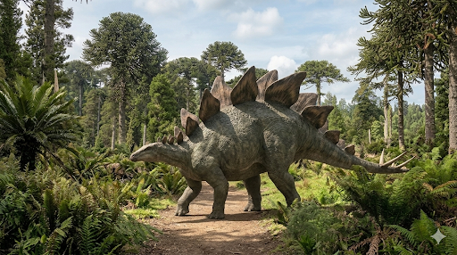

סטגוזאורוס
The Roof Lizard: Stegosaurus stenops

תיק מחקר: נתונים אבולוציוניים משולבים
תקופת פעילות
לפני כ-155 עד 150 מיליון שנה
תור היורה המאוחר (גיל הקימרידג'י והטיטוני מוקדם).
מסה ומשקל
5 עד 7 טונות
מבנה כבד ומגושם עם מרכז כובד נמוך, המזכיר מעט קרנף מודרני מוגדל.
ממדים (אורך וגובה)
אורך עד 9 מטרים
גובה הירך כ-4 מטרים. ראשו הוחזק נמוך קרוב לקרקע, בעוד שזנבו הוחזק באוויר.
מיקום גיאוגרפי
מערב ארצות הברית
נמצא בעיקר בתצורת מוריסון (קולורדו, יוטה ווויומינג). פרטים מהמין (S. ungulatus) התגלו גם בפורטוגל.
סיווג טקסונומי קריטי
דינוזאור בעל-אגן-דמוי-עוף (Ornithischia / Stegosauridae)
שייך לקבוצת התיראופורה (Thyreophora - נושאי המגן). בניגוד לזאורופודים הענקיים שהלכו לצידו, הסטגוזאורוס פיתח הגנה פיזית קיצונית: שתי שורות של לוחיות גב וזנב קוצני קטלני.
01 // ניתוח אטימולוגי נרחב
| החלק בשם | שפת מקור | פירוש ומשמעות היסטורית |
|---|---|---|
| Stego- | יוונית עתיקה (στέγος / stegos) | גג (Roof / Cover) הוענק בשנת 1877 על ידי הפלאונטולוג עותניאל צ'ארלס מארש. מארש חשב בטעות שלוחיות הגב העצומות של החיה שכבו בצורה אופקית על גבה כמו רעפים של גג (מעין שריון רציף), ולא עמדו זקופות כפי שידוע כיום. |
| -saurus | יוונית עתיקה (σαῦρος / sauros) | לטאה הסיומת הסטנדרטית. הלחם השם יוצר את המשמעות המלאה: **"לטאת הגג"**. |
| stenops | יוונית (στενός + ὤψ) | פנים צרות (Narrow-faced) מין הדגל המוכר ביותר (S. stenops) זכה לשם זה (על ידי מארש ב-1887) בשל גולגולתו הצרה במיוחד והמוארכת, שהותאמה לנבירה בסבך צמחייה. |
02 // תולדות הגילוי: קורבן מלחמות העצמות וניצחון הגולגולות
הסיבה למשלחות: מלחמות העצמות במערב הפרוע
הסטגוזאורוס התגלה באותה שנה ממש כמו חבריו ליורה (האלוזאורוס והדיפלודוקוס) – שנת 1877. תקופה זו הייתה שיאה של "מלחמות העצמות" ההרסניות בין **עותניאל צ'ארלס מארש** לאדוארד דרינקר קופ. העצמות הראשונות התגלו צפונית למוריסון, קולורדו. הלחץ חסר התקדים לתאר ולהגדיר מינים חדשים לפני המתחרה, הוביל את מארש לפרסם את ממצאיו במהירות שיא, מה שהוביל לטעות המביכה של "לטאת הגג" (ההנחה שלוחיות הגב שכבו כמו שריון צב).
תעלומת המוח הכפול ואנטומיית הלוחיות
הסטגוזאורוס מפורסם במוחו הזעיר, שקל רק כ-80 גרם. בשל כך, נפוצה אגדה מדעית ותיקה (שהתחילה על ידי מארש) לפיה לסטגוזאורוס היה "מוח שני" ליד האגן כדי לשלוט בזנב וברגליים. כיום הוכח כי זה לא היה מוח, אלא חלל עצבי המכיל בלוטת גליקוגן, שקיימת גם בעופות מודרניים. כמו כן, רק עם גילוי שלדים מחוברים הבינו ש-17 לוחיות הגב עמדו זקופות בשתי שורות מוצלבות, ולא שכבו על הגב.
ניצחון הגולגולות: מ-1886 עד ל"סופי"
בניגוד לדינוזאורים ענקיים אחרים (כמו הדיפלודוקוס) שראשיהם אבדו או הוחלפו בטעות, המקרה של הסטגוזאורוס הוא סיפור הצלחה היסטורי במציאת גולגולות שלמות לחלוטין:
- התגלית המכוננת של פלץ (1886): הגולגולת השלמה הראשונה התגלתה ב-1886 על ידי מרשל פ. פלץ (Marshall P. Felch), אספן שעבד עבור מארש, באתר חפירה הנקרא "גארדן פארק" בקולורדו. הגולגולת הזו נשמרה בתוך סלע בתנוחה שאפשרה לחוקרים לראות את המבנה התלת-ממדי המושלם שלה. בזכות גולגולת זו, מארש הבין שיש להם מין חדש וקרא לו *Stegosaurus stenops* ("פנים צרות"), שכן הגולגולת הייתה מוארכת, צרה מאוד, ובעלת מקור קדמי ללא שיניים.
- הפלא של "סופי" (2003): למרות התגלית של מארש, הגולגולת האמיתית המרהיבה והשלמה ביותר התגלתה הרבה יותר מאוחר. ב-2003, פלאונטולוג בשם בוב סיימון גילה את השלד "סופי" (Sophie) ב-Red Canyon Ranch שבויומינג. השלד היה שלם בכ-85%, אך החשוב מכל: זו הייתה הפעם הראשונה בה מצאו גולגולת מושלמת ב-100%, **כשהיא מחוברת לחלוטין לצוואר ולשאר השלד!** זהו ממצא נדיר ביותר, שככל הנראה התאפשר עקב קבורה מהירה בבוץ שהגנה עליו מטורפים. הגולגולת של סופי אפשרה למדענים (במוזיאון ההיסטוריה של הטבע בלונדון) לבצע סריקות CT מתקדמות ולשחזר בדיוק את המוח הזעיר, כלי הדם וחוזק הנשיכה של הסטגוזאורוס.
אקולוגיה וביומכניקה: חידת הקירור ונשק ה"תגומייזר"
מבנה גופו המוזר של הסטגוזאורוס הכתיב את אורח חייו – רגליים אחוריות ארוכות, רגליים קדמיות קצרות וראש קטן הקרוב לקרקע.
תזונה (Diet)
הסטגוזאורוס היה רועה (Grazer/Low Browser). בניגוד לזאורופודים שהרימו את ראשם לצמרות, הוא אכל צמחייה קרקעית נמוכה כגון שרכים, טחבים וציקדים. המקור הקרני שלו (שנעדר שיניים בחזית) עזר לו לקטוף את הצמחים, ושיניו האחוריות הקטנות מעכו אותם בטרם נבלעו למערכת העיכול הגדולה.
חידת לוחיות הגב
מה היה תפקיד הלוחיות? הן לא סיפקו הגנה (היו דקות מדי ושבירות). במשך שנים נחשב ששימשו ל**ויסות חום (Thermoregulation)** – הן היו מכוסות בכלי דם רבים ושימשו מעין "רדיאטור" כדי לקלוט את חום השמש בבוקר או לקרר את הגוף ברוח. כיום, התיאוריה המובילה טוענת שהלוחיות שימשו ל**תצוגה (Display)**. ייתכן שעל ידי הזרמת דם ללוחיות, הסטגוזאורוס יכל "להסמיק" אותן ולהפוך אותן לאדומות ומאיימות כדי למשוך בנות זוג או להרתיע טורפים.
התגומייזר (The Thagomizer)
אם הלוחיות היו לתצוגה, הנשק האמיתי שכן בקצה הזנב – ארבעה דורבנות (Spikes) עצם ארוכים (עד מטר אורכם), שהיו מכוסים בנדן קרני חד כתער.
הסטגוזאורוס היה מניף את הזנב הגמיש שלו מצד לצד בעוצמה אדירה. המדע הוכיח מעבר לכל ספק שזה היה נשק פעיל ולא רק הרתעה: פלאונטולוגים מצאו חוליית זנב של אלוזאורוס (טורף העל מאותו עידן) שניקבה לחלוטין. הניקוב, שעבר דרך העצם והוביל לזיהום קטלני, תאם ב-100% את הצורה ואת זווית הפגיעה של קוץ הסטגוזאורוס (התגומייזר).
השם "תגומייזר" מקורו לא במדע – אלא בקריקטורה של גארי לארסון מ-1982 ("הצד הרחוק"), שבה אדם קדמון מסביר שהדורבנות נקראים כך לזכרו של "תאג סימונס המנוח". השם הפך לפופולרי עד שהמדענים אימצו אותו כמונח אנטומי רשמי!